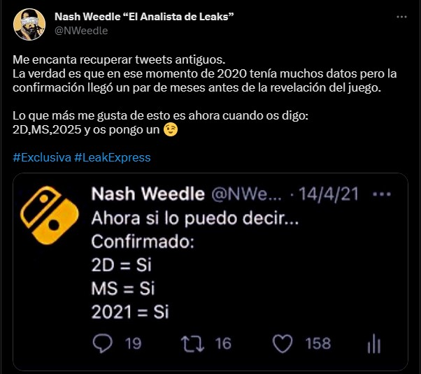

RUMOR: MercurySteam está desarrollando otro Metroid en 2D
Te compartimos la información de un leaker que anunció Metroid Dread antes que Nintendo

Los usuarios de Nintendo Switch siguen esperando novedades de Metroid Prime en la plataforma (ya sea el 1, 2, 3 o 4). Sin embargo, tal parece que la dirección podría ir en otro camino según un nuevo rumor, el cual apunta a que ya se está trabajando en un nuevo Metroid en 2D.
¿Llegará Metroid Dread 2?
Como seguramente sabes, Metroid Dread se lanzó en octubre de 2021 consiguiendo el mayor éxito de la franquicia, todo ello gracias al tremendo trabajo realizado por el equipo español de MercurySteam.
Ahora, un leaker que habló sobre el juego un año antes de su lanzamiento, y también antes de que Nintendo lo anunciara, está afirmando que el estudio ya se encuentra trabajando en otro título más en 2D que llegaría en 2025.
Ahora, un leaker que habló sobre el juego un año antes de su lanzamiento, y también antes de que Nintendo lo anunciara, está afirmando que el estudio ya se encuentra trabajando en otro título más en 2D que llegaría en 2025.
Aquí puedes ver el mensaje compartido:
Como pudiste observar, el rumor proviene del usuario en Twitter conocido como Nash Weedle “El Analista de Leaks”, quien recuperó las imágenes de 2 tweets que realizó en 2020 e inicios de 2021 confirmando que Metroid Dread llegaría.
Lo más importante de todo, es que ahora asegura que una nueva entrega, con un estilo similar a la última, está siendo desarrollada por MercurySteam y estaría planeada para lanzarse en 2025.
Cabe mencionar que no es descabellado pensar que el estudio español ganó la confianza suficiente para que Nintendo le dejará continuar con la franquicia pero, en caso de que esta información sea cierta, sería aún más complicado entender si en verdad hay planes para seguir con Metroid Prime.
Habrá que tomar esta información como un simple rumor y esperar algún comunicado oficial por parte de Nintendo, esto para saber si un posible Metroid Dread 2 viene en camino y conocer si en 2025 será para Switch o para su sucesor.